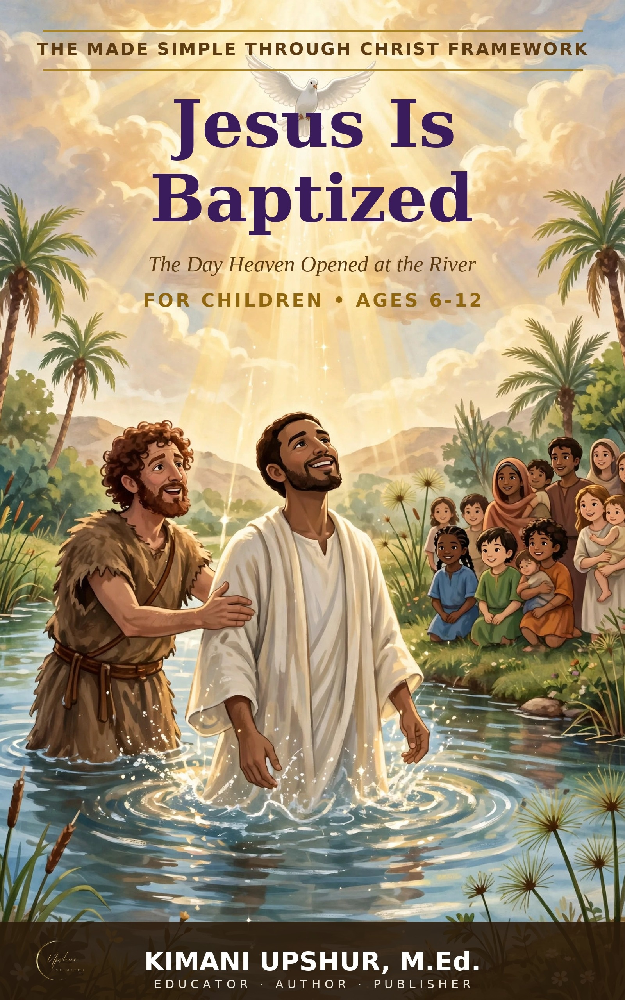

Home / Kids & Teens / Children

Jesus Is Baptized
The Day Heaven Opened at the River
by Kimani Upshur, M.Ed.
This is the true story of the day Jesus was baptized in the River Jordan — told straight from Matthew chapter 3. The first half of the chapter tells how God prepared the way through a wild, wonderful messenger named John the Baptist. It is written to be read aloud, one short chapter at a time; each chapter takes about five minutes, with three illustrations in every chapter.
Watch for the moment heaven opens. When Jesus comes up out of the water, God does something He had never done quite this way before: the Holy Spirit comes down like a dove, and the Father's voice speaks from heaven. Father, Son, and Holy Spirit — one God, three Persons — all together at the river in a single moment: the Father spoke, the Son stood in the water, the Spirit came down like a dove.
Your child may ask the best question in the book: if Jesus never sinned, why did He need to be baptized? The book walks through Jesus' own answer — He came to do everything God had planned, standing with us and for us from the very beginning of His work.
Every chapter ends with a Do or a Pray — one small action for the week, and a short prayer your child can say out loud. And at the very end of the book is a special invitation: how your child can give their life to Jesus. For children, ages 6–12. The key verse of this story is Matthew 3:17, where the Father says of Jesus, “This is my beloved Son, with whom I am well pleased.”
Written from a Christian worldview — Scripture first.
- Publisher
- Upshur Unlimited, LLC
- Author
- Kimani Upshur, M.Ed.
- Format
- Ebook
- List Price
- $4.99 USD
- Language
- English
- Audience
- For Children • Ages 6–12
More Children's Books
Explore the full collection of books for children's.